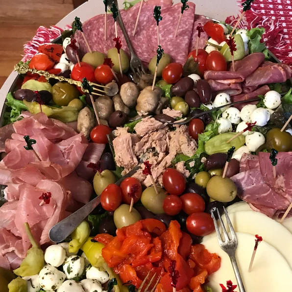

Anitpasto Platter

Description
This is a layered antipasto, so you can cut it in square slices neatly and have all the ingredients. This is a beautiful dish that's always a hit! It will make the vegetarians jealous. Add the veggies to your liking. Serve with fresh Italian bread. Enjoy!
Ingredients
- 2 heads iceberg lettuce
- 1 tablespoon garlic powder
- 1 tablespoon dried oregano
- 1 tablespoon dried oregano
- 1 (8 ounce) bottle Italian-style salad dressing
- 1 pound thinly sliced cooked ham
- 2 ½ pounds sliced provolone cheese
- ½ pound Genoa salami, thinly sliced
- ¼ pound Capacola sausage, sliced
- ¼ pound pepperoni sausage, sliced
- ¼ pound prosciutto, thinly sliced
- ¼ pound thinly sliced roast beef
- 1 cup fresh mushrooms
- 1 (6 ounce) can marinated artichoke hearts
- 1 (7 ounce) jar roasted red peppers
- 1 (6 ounce) can sliced black olives
- ¾ cup sliced pepperoncini pepper
- 1 (5 ounce) jar sliced pimento-stuffed green olives
- ½ cup crumbled Gorgonzola cheese
- ½ pound mozzarella cheese, sliced
- ¼ cup grated Parmesan cheese
Steps
- Remove large outer leaves from the heads of lettuce. Arrange approximately 1/3 in a layer on a large serving platter. Sprinkle with 1/3 garlic powder, 1/3 crushed oregano and desired amount of Italian-style salad dressing. Layer with cooked ham and Provolone cheese.
- Layer Provolone cheese with another 1/3 of the lettuce leaves, 1/3 garlic powder, 1/3 crushed oregano, desired amount of Italian-style salad dressing, Genoa salami and Capacola sausage.
- Repeat layering with remaining lettuce, garlic powder, crushed oregano, Italian-style salad dressing, pepperoni sausage, prosciutto and roast beef.
- Layer with mushrooms, marinated artichoke hearts, roasted red peppers, black olives, pepperoncini and pimento-stuffed green olives. Sprinkle with more Italian-style salad dressing, as desired.
- Top with Gorgonzola cheese, mozzarella cheese and Parmesan cheese. Cover and chill in the refrigerator until serving.
Return to Home